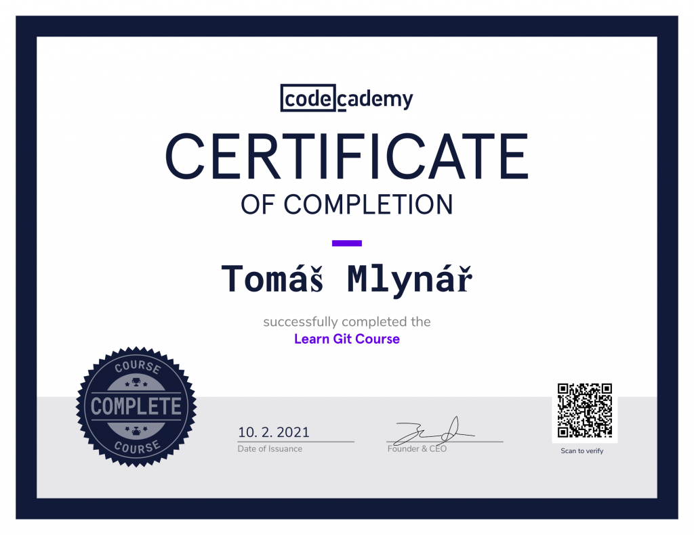

Certificates
 Elements Of AI - The Elements of AI is a series of free online courses created by Reaktor and the University of Helsinki.
We want to encourage as broad a group of people as possible to learn what AI is, what can (and can't) be done with AI,
and how to start creating AI methods. The courses combine theory with practical exercises and can be completed at your own pace.
Elements Of AI - The Elements of AI is a series of free online courses created by Reaktor and the University of Helsinki.
We want to encourage as broad a group of people as possible to learn what AI is, what can (and can't) be done with AI,
and how to start creating AI methods. The courses combine theory with practical exercises and can be completed at your own pace.
Google Digitální garáž - Základy digitálního marketingu
 Codecademy - In Learn Java Course you'll be exposed to fundamental
programming concepts, including object-oriented programming (OOP)
using Java. You'll build 7 Java projects—like a basic calculator—to
help you practice along the way.
Codecademy - In Learn Java Course you'll be exposed to fundamental
programming concepts, including object-oriented programming (OOP)
using Java. You'll build 7 Java projects—like a basic calculator—to
help you practice along the way.
 Codecademy - Learn Python 2 Course is a great introduction to both
fundamental programming concepts and the Python programming language.
By the end, you'll be comfortable programming in Python and taking
your skills off the Codecademy platform and onto your own computer.
Codecademy - Learn Python 2 Course is a great introduction to both
fundamental programming concepts and the Python programming language.
By the end, you'll be comfortable programming in Python and taking
your skills off the Codecademy platform and onto your own computer.
 Codecademy By the end of the Learn the Command Line Course, you will
be able to navigate, access, and modify files and folders on your
computer—all without a mouse!
Codecademy By the end of the Learn the Command Line Course, you will
be able to navigate, access, and modify files and folders on your
computer—all without a mouse!
 Codecademy - Learn Bash Scripting Course - The essence of a useful
technology is the mechanization of a repetitive process, and that
is exactly the spirit of a bash script: a re-usable script that
automatically executes a series of commands to speed up your programming
workflow. In this new course, you will learn how to improve your own
programming process by writing bash scripts that save you precious time.
Codecademy - Learn Bash Scripting Course - The essence of a useful
technology is the mechanization of a repetitive process, and that
is exactly the spirit of a bash script: a re-usable script that
automatically executes a series of commands to speed up your programming
workflow. In this new course, you will learn how to improve your own
programming process by writing bash scripts that save you precious time.

Codecademy - Git, simply put, is a tool to save versions of your code.
This course will teach you a basic workflow and Git's core features, different ways
to undo changes or save multiple versions of a project, and how to collaborate with
other developers.
 Microsoft Virtual Academy - Moderní student
Microsoft Virtual Academy - Moderní student